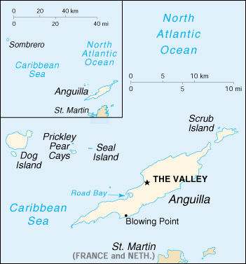

![[Country Flag of Anguilla]](../flags/av-lgflag.jpg)
| Anguilla |
|
         |  | |
| Introduction |
Background: Colonized by English settlers from Saint Kitts in 1650, Anguilla was administered by Great Britain until the early 19th century, when the island - against the wishes of the inhabitants - was incorporated into a single British dependency along with Saint Kitts and Nevis. Several attempts at separation failed. In 1971, two years after a revolt, Anguilla was finally allowed to secede; this arrangement was formally recognized in 1980 with Anguilla becoming a separate British dependency.
| Geography |
Location: Caribbean, island in the Caribbean Sea, east of Puerto Rico
Geographic coordinates: 18 15 N, 63 10 W
Map references: Central America and the Caribbean
Area:
total:
91 sq km
land:
91 sq km
water:
0 sq km
Area - comparative: about half the size of Washington, DC
Land boundaries: 0 km
Coastline: 61 km
Maritime claims:
exclusive fishing zone:
200 nm
territorial sea:
3 nm
Climate: tropical; moderated by northeast trade winds
Terrain: flat and low-lying island of coral and limestone
Elevation extremes:
lowest point:
Caribbean Sea 0 m
highest point:
Crocus Hill 65 m
Natural resources: salt, fish, lobster
Land use:
arable land:
0%
permanent crops:
0%
permanent pastures:
0%
forests and woodland:
0%
other:
100% (mostly rock with sparse scrub oak, few trees, some commercial salt ponds)
Irrigated land: NA sq km
Natural hazards: frequent hurricanes and other tropical storms (July to October)
Environment - current issues: supplies of potable water sometimes cannot meet increasing demand largely because of poor distribution system
| People |
Population: 11,797 (July 2000 est.)
Age structure:
0-14 years:
26% (male 1,565; female 1,519)
15-64 years:
67% (male 4,040; female 3,839)
65 years and over:
7% (male 369; female 465) (2000 est.)
Population growth rate: 2.93% (2000 est.)
Birth rate: 15.34 births/1,000 population (2000 est.)
Death rate: 5.76 deaths/1,000 population (2000 est.)
Net migration rate: 19.75 migrant(s)/1,000 population (2000 est.)
Sex ratio:
at birth:
1.03 male(s)/female
under 15 years:
1.03 male(s)/female
15-64 years:
1.05 male(s)/female
65 years and over:
0.79 male(s)/female
total population:
1.03 male(s)/female (2000 est.)
Infant mortality rate: 25.44 deaths/1,000 live births (2000 est.)
Life expectancy at birth:
total population:
76.11 years
male:
73.22 years
female:
79.09 years (2000 est.)
Total fertility rate: 1.8 children born/woman (2000 est.)
Nationality:
noun:
Anguillan(s)
adjective:
Anguillan
Ethnic groups: black
Religions: Anglican 40%, Methodist 33%, Seventh-Day Adventist 7%, Baptist 5%, Roman Catholic 3%, other 12%
Languages: English (official)
Literacy:
definition:
age 12 and over can read and write
total population:
95%
male:
95%
female:
95% (1984 est.)
| Government |
Country name:
conventional long form:
none
conventional short form:
Anguilla
Data code: AV
Dependency status: overseas territory of the UK
Government type: NA
Capital: The Valley
Administrative divisions: none (overseas territory of the UK)
Independence: none (overseas territory of the UK)
National holiday: Anguilla Day, 30 May
Constitution: Anguilla Constitutional Order 1 April 1982; amended 1990
Legal system: based on English common law
Suffrage: 18 years of age; universal
Executive branch:
chief of state:
Queen ELIZABETH II (since 6 February 1952); represented by Governor Alan HOOLE (since 1 November 1995)
head of government:
Chief Minister Hubert HUGHES (since 16 March 1994)
cabinet:
Executive Council appointed by the governor from among the elected members of the House of Assembly
elections:
none; the monarch is hereditary; governor appointed by the monarch; chief minister appointed by the governor from among the members of the House of Assembly
Legislative branch:
unicameral House of Assembly (11 seats total, 7 elected by direct popular vote, 2 ex officio members and 2 appointed; members serve five-year terms)
elections:
last held 4 March 1999 (next to be held 10 March 2004)
election results:
percent of vote by party - NA; seats by party - ANA 2, AUP 2, ADP 2, independent 1
Judicial branch: High Court (judge provided by Eastern Caribbean Supreme Court)
Political parties and leaders: Anguilla Democratic Party or ADP [Victor BANKS]; Anguilla National Alliance or ANA [Osbourne FLEMING]; Anguilla United Party or AUP [Hubert HUGHES]
International organization participation: Caricom (associate), CDB, Interpol (subbureau), OECS (associate), ECLAC (associate)
Diplomatic representation in the US: none (overseas territory of the UK)
Diplomatic representation from the US: none (overseas territory of the UK)
Flag description: blue, with the flag of the UK in the upper hoist-side quadrant and the Anguillan coat of arms centered in the outer half of the flag; the coat of arms depicts three orange dolphins in an interlocking circular design on a white background with blue wavy water below
| Economy |
Economy - overview: Anguilla has few natural resources, and the economy depends heavily on luxury tourism, offshore banking, lobster fishing, and remittances from emigrants. The economy, and especially the tourism sector, suffered a setback in late 1995 due to the effects of Hurricane Luis in September but recovered in 1996. Increased activity in the tourism industry, which has spurred the growth of the construction sector, contributed to economic growth in 1997-98. Anguillan officials have put substantial effort into developing the offshore financing sector. A comprehensive package of financial services legislation was enacted in late 1994. In the medium term, prospects for the economy will depend on the tourism sector and, therefore, on continuing income growth in the industrialized nations as well as favorable weather conditions.
GDP: purchasing power parity - $88 million (1998 est.)
GDP - real growth rate: 6.5% (1998 est.)
GDP - per capita: purchasing power parity - $7,900 (1998 est.)
GDP - composition by sector:
agriculture:
4%
industry:
18%
services:
78% (1997 est.)
Population below poverty line: NA%
Household income or consumption by percentage share:
lowest 10%:
NA%
highest 10%:
NA%
Inflation rate (consumer prices): 2.5% (1998 est.)
Labor force: 4,400 (1992)
Labor force - by occupation: commerce 36%, services 29%, construction 18%, transportation and utilities 10%, manufacturing 3%, agriculture/fishing/forestry/mining 4%
Unemployment rate: 7% (1992 est.)
Budget:
revenues:
$20.4 million
expenditures:
$23.3 million, including capital expenditures of $3.8 million (1997 est.)
Industries: tourism, boat building, offshore financial services
Industrial production growth rate: 3.1% (1997 est.)
Electricity - production: NA kWh
Electricity - production by source:
fossil fuel:
NA%
hydro:
NA%
nuclear:
NA%
other:
NA%
Electricity - consumption: NA kWh
Electricity - exports: NA kWh
Electricity - imports: NA kWh
Agriculture - products: small quantities of tobacco, vegetables; cattle raising
Exports: $4.5 million (1998)
Exports - commodities: lobster, fish, livestock, salt
Exports - partners: NA
Imports: $57.6 million (1998)
Imports - commodities: NA
Imports - partners: NA
Debt - external: $8.8 million (1998)
Economic aid - recipient: $3.5 million (1995)
Currency: 1 East Caribbean dollar (EC$) = 100 cents
Exchange rates: East Caribbean dollars (EC$) per US$1 - 2.7000 (fixed rate since 1976)
Fiscal year: 1 April - 31 March
| Communications |
Telephones - main lines in use: 4,000 (1994)
Telephones - mobile cellular: NA
Telephone system:
domestic:
modern internal telephone system
international:
microwave radio relay to island of Saint Martin (Guadeloupe and Netherlands Antilles)
Radio broadcast stations: AM 5, FM 6, shortwave 1 (1998)
Radios: 3,000 (1997)
Television broadcast stations: 1 (1997)
Televisions: 1,000 (1997)
Internet Service Providers (ISPs): NA
| Transportation |
Railways: 0 km
Highways:
total:
279 km
paved:
253 km
unpaved:
26 km (1998 est.)
Ports and harbors: Blowing Point, Road Bay
Merchant marine: none (1999 est.)
Airports: 3 (1999 est.)
Airports - with paved runways:
total:
1
914 to 1,523 m:
1 (1999 est.)
Airports - with unpaved runways:
total:
2
under 914 m:
2 (1999 est.)
| Military |
Military - note: defense is the responsibility of the UK
| Transnational Issues |
Disputes - international: none